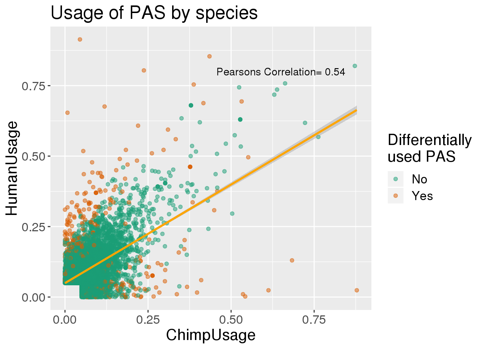
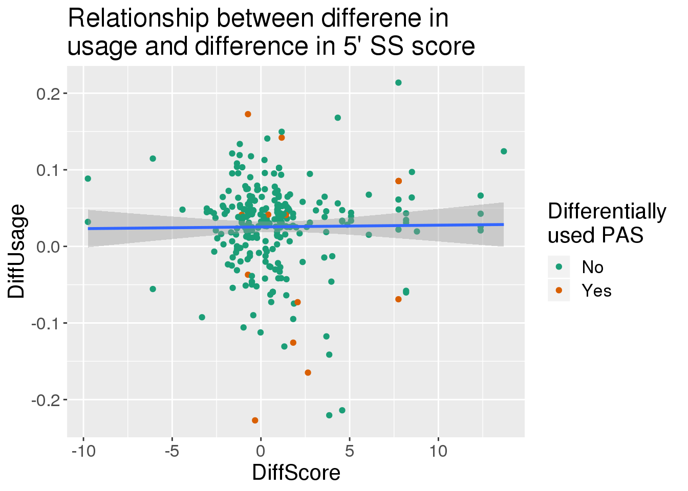

5’ Spice Site strength
Briana Mittleman
2/21/2020
Last updated: 2020-04-10
Checks: 7 0
Knit directory: Comparative_APA/analysis/
This reproducible R Markdown analysis was created with workflowr (version 1.6.0). The Checks tab describes the reproducibility checks that were applied when the results were created. The Past versions tab lists the development history.
Great! Since the R Markdown file has been committed to the Git repository, you know the exact version of the code that produced these results.
Great job! The global environment was empty. Objects defined in the global environment can affect the analysis in your R Markdown file in unknown ways. For reproduciblity it’s best to always run the code in an empty environment.
The command set.seed(20190902) was run prior to running the code in the R Markdown file. Setting a seed ensures that any results that rely on randomness, e.g. subsampling or permutations, are reproducible.
Great job! Recording the operating system, R version, and package versions is critical for reproducibility.
Nice! There were no cached chunks for this analysis, so you can be confident that you successfully produced the results during this run.
Great job! Using relative paths to the files within your workflowr project makes it easier to run your code on other machines.
Great! You are using Git for version control. Tracking code development and connecting the code version to the results is critical for reproducibility. The version displayed above was the version of the Git repository at the time these results were generated.
Note that you need to be careful to ensure that all relevant files for the analysis have been committed to Git prior to generating the results (you can use wflow_publish or wflow_git_commit). workflowr only checks the R Markdown file, but you know if there are other scripts or data files that it depends on. Below is the status of the Git repository when the results were generated:
Ignored files:
Ignored: .DS_Store
Ignored: .Rhistory
Ignored: .Rproj.user/
Ignored: code/chimp_log/
Ignored: code/human_log/
Ignored: data/.DS_Store
Ignored: data/TrialFiltersMeta.txt.sb-9845453e-R58Y0Q/
Ignored: data/mediation_prot/
Ignored: data/metadata_HCpanel.txt.sb-284518db-RGf0kd/
Ignored: data/metadata_HCpanel.txt.sb-a5794dd2-i594qs/
Ignored: output/.DS_Store
Untracked files:
Untracked: ._.DS_Store
Untracked: Chimp/
Untracked: Human/
Untracked: analysis/CrossChimpThreePrime.Rmd
Untracked: analysis/DiffTransProtvsExpression.Rmd
Untracked: analysis/DiffUsedUTR.Rmd
Untracked: analysis/GvizPlots.Rmd
Untracked: analysis/HandC.TvN
Untracked: analysis/PhenotypeOverlap10.Rmd
Untracked: analysis/annotationBias.Rmd
Untracked: analysis/assessReadQual.Rmd
Untracked: analysis/diffExpressionPantro6.Rmd
Untracked: code/._AlignmentScores.sh
Untracked: code/._BothFCMM.sh
Untracked: code/._BothFCMMPrim.sh
Untracked: code/._BothFCnewOInclusive.sh
Untracked: code/._ChimpStarMM2.sh
Untracked: code/._ClassifyLeafviz.sh
Untracked: code/._ClosestorthoEx.sh
Untracked: code/._Config_chimp.yaml
Untracked: code/._Config_chimp_full.yaml
Untracked: code/._Config_human.yaml
Untracked: code/._ConvertJunc2Bed.sh
Untracked: code/._CountNucleotides.py
Untracked: code/._CrossMapChimpRNA.sh
Untracked: code/._CrossMapThreeprime.sh
Untracked: code/._DiffSplice.sh
Untracked: code/._DiffSplicePlots.sh
Untracked: code/._DiffSplicePlots_gencode.sh
Untracked: code/._DiffSplice_gencode.sh
Untracked: code/._DiffSplice_removebad.sh
Untracked: code/._Filter255MM.sh
Untracked: code/._FilterPrimSec.sh
Untracked: code/._FindIntronForDomPAS.sh
Untracked: code/._FindIntronForDomPAS_DF.sh
Untracked: code/._GetMAPQscore.py
Untracked: code/._GetSecondaryMap.py
Untracked: code/._Lift5perPAS.sh
Untracked: code/._LiftFinalChimpJunc2Human.sh
Untracked: code/._LiftOrthoPAS2chimp.sh
Untracked: code/._MapBadSamples.sh
Untracked: code/._MismatchNumbers.sh
Untracked: code/._PAS_ATTAAA.sh
Untracked: code/._PAS_ATTAAA_df.sh
Untracked: code/._PAS_seqExpanded.sh
Untracked: code/._PASsequences.sh
Untracked: code/._PASsequences_DF.sh
Untracked: code/._PlotNuclearUsagebySpecies.R
Untracked: code/._PlotNuclearUsagebySpecies_DF.R
Untracked: code/._QuantMergedClusters.sh
Untracked: code/._RNATranscriptDTplot.sh
Untracked: code/._ReverseLiftFilter.R
Untracked: code/._RunFixLeafCluster.sh
Untracked: code/._RunNegMCMediation.sh
Untracked: code/._RunNegMCMediationDF.sh
Untracked: code/._RunPosMCMediationDF.err
Untracked: code/._RunPosMCMediationDF.sh
Untracked: code/._SAF2Bed.py
Untracked: code/._Snakefile
Untracked: code/._SnakefilePAS
Untracked: code/._SnakefilePASfilt
Untracked: code/._SortIndexBadSamples.sh
Untracked: code/._StarMM2.sh
Untracked: code/._TestFC.sh
Untracked: code/._assignPeak2Intronicregion
Untracked: code/._assignPeak2Intronicregion.sh
Untracked: code/._bed215upbed.py
Untracked: code/._bed2Bedbothstrand.py
Untracked: code/._bed2SAF_gen.py
Untracked: code/._buildIndecpantro5
Untracked: code/._buildIndecpantro5.sh
Untracked: code/._buildLeafviz.sh
Untracked: code/._buildLeafviz_leadAnno.sh
Untracked: code/._buildStarIndex.sh
Untracked: code/._chimpChromprder.sh
Untracked: code/._chimpMultiCov.sh
Untracked: code/._chimpMultiCov255.sh
Untracked: code/._chimpMultiCovInclusive.sh
Untracked: code/._chooseSignalSite.py
Untracked: code/._cleanbed2saf.py
Untracked: code/._cluster.json
Untracked: code/._cluster2bed.py
Untracked: code/._clusterLiftReverse.sh
Untracked: code/._clusterLiftReverse_removebad.sh
Untracked: code/._clusterLiftprimary.sh
Untracked: code/._clusterLiftprimary_removebad.sh
Untracked: code/._converBam2Junc.sh
Untracked: code/._converBam2Junc_removeBad.sh
Untracked: code/._extraSnakefiltpas
Untracked: code/._extractPhyloReg.py
Untracked: code/._extractPhyloRegGene.py
Untracked: code/._extractPhylopGeneral.ph
Untracked: code/._extractPhylopGeneral.py
Untracked: code/._extractPhylopReg200down.py
Untracked: code/._extractPhylopReg200up.py
Untracked: code/._filter5percPAS.py
Untracked: code/._filterNumChroms.py
Untracked: code/._filterPASforMP.py
Untracked: code/._filterPostLift.py
Untracked: code/._filterPrimaryread.py
Untracked: code/._filterSecondaryread.py
Untracked: code/._fixExonFC.py
Untracked: code/._fixFCheadforExp.py
Untracked: code/._fixLeafCluster.py
Untracked: code/._fixLiftedJunc.py
Untracked: code/._fixUTRexonanno.py
Untracked: code/._formathg38Anno.py
Untracked: code/._formatpantro6Anno.py
Untracked: code/._getRNAseqMapStats.sh
Untracked: code/._hg19MapStats.sh
Untracked: code/._humanChromorder.sh
Untracked: code/._humanMultiCov.sh
Untracked: code/._humanMultiCov255.sh
Untracked: code/._humanMultiCov_inclusive.sh
Untracked: code/._intersectLiftedPAS.sh
Untracked: code/._liftJunctionFiles.sh
Untracked: code/._liftPAS19to38.sh
Untracked: code/._liftedchimpJunc2human.sh
Untracked: code/._makeNuclearDapaplots.sh
Untracked: code/._makeNuclearDapaplots_DF.sh
Untracked: code/._makeSamplyGroupsHuman_TvN.py
Untracked: code/._mapRNAseqhg19.sh
Untracked: code/._mapRNAseqhg19_newPipeline.sh
Untracked: code/._maphg19.sh
Untracked: code/._maphg19_subjunc.sh
Untracked: code/._mediation_test.R
Untracked: code/._mergeChimp3prime_inhg38.sh
Untracked: code/._mergeandBWRNAseq.sh
Untracked: code/._mergedBam2BW.sh
Untracked: code/._nameClusters.py
Untracked: code/._negativeMediation_montecarlo.R
Untracked: code/._negativeMediation_montecarloDF.R
Untracked: code/._numMultimap.py
Untracked: code/._overlapMMandOrthoexon.sh
Untracked: code/._overlapPASandOrthoexon.sh
Untracked: code/._overlapapaQTLPAS.sh
Untracked: code/._parseHg38.py
Untracked: code/._postiveMediation_montecarlo_DF.R
Untracked: code/._prepareCleanLiftedFC_5perc4LC.py
Untracked: code/._prepareLeafvizAnno.sh
Untracked: code/._preparePAS4lift.py
Untracked: code/._primaryLift.sh
Untracked: code/._processhg38exons.py
Untracked: code/._quantJunc.sh
Untracked: code/._quantJunc_TEST.sh
Untracked: code/._quantJunc_removeBad.sh
Untracked: code/._quantLiftedPASPrimary.sh
Untracked: code/._quantMerged_seperatly.sh
Untracked: code/._recLiftchim2human.sh
Untracked: code/._revLiftPAShg38to19.sh
Untracked: code/._reverseLift.sh
Untracked: code/._runCheckReverseLift.sh
Untracked: code/._runChimpDiffIso.sh
Untracked: code/._runCountNucleotides.sh
Untracked: code/._runFilterNumChroms.sh
Untracked: code/._runHumanDiffIso.sh
Untracked: code/._runNuclearDiffIso_DF.sh
Untracked: code/._runNuclearDifffIso.sh
Untracked: code/._runTotalDiffIso.sh
Untracked: code/._run_chimpverifybam.sh
Untracked: code/._run_verifyBam.sh
Untracked: code/._snakemake.batch
Untracked: code/._snakemakePAS.batch
Untracked: code/._snakemakePASchimp.batch
Untracked: code/._snakemakePAShuman.batch
Untracked: code/._snakemake_chimp.batch
Untracked: code/._snakemake_human.batch
Untracked: code/._snakemakefiltPAS.batch
Untracked: code/._snakemakefiltPAS_chimp
Untracked: code/._snakemakefiltPAS_chimp.sh
Untracked: code/._snakemakefiltPAS_human.sh
Untracked: code/._spliceSite2Fasta.py
Untracked: code/._submit-snakemake-chimp.sh
Untracked: code/._submit-snakemake-human.sh
Untracked: code/._submit-snakemakePAS-chimp.sh
Untracked: code/._submit-snakemakePAS-human.sh
Untracked: code/._submit-snakemakefiltPAS-chimp.sh
Untracked: code/._submit-snakemakefiltPAS-human.sh
Untracked: code/._subset_diffisopheno_Nuclear_HvC.py
Untracked: code/._subset_diffisopheno_Nuclear_HvC_DF.py
Untracked: code/._subset_diffisopheno_Total_HvC.py
Untracked: code/._threeprimeOrthoFC.sh
Untracked: code/._transcriptDTplotsNuclear.sh
Untracked: code/._verifyBam4973.sh
Untracked: code/._verifyBam4973inHuman.sh
Untracked: code/._wrap_chimpverifybam.sh
Untracked: code/._wrap_verifyBam.sh
Untracked: code/._writeMergecode.py
Untracked: code/.snakemake/
Untracked: code/ALLPAS_sequenceDF.err
Untracked: code/ALLPAS_sequenceDF.out
Untracked: code/AlignmentScores.err
Untracked: code/AlignmentScores.out
Untracked: code/AlignmentScores.sh
Untracked: code/BothFCMM.err
Untracked: code/BothFCMM.out
Untracked: code/BothFCMM.sh
Untracked: code/BothFCMMPrim.err
Untracked: code/BothFCMMPrim.out
Untracked: code/BothFCMMPrim.sh
Untracked: code/BothFCnewOInclusive.sh
Untracked: code/BothFCnewOInclusive.sh.err
Untracked: code/BothFCnewOInclusive.sh.out
Untracked: code/ChimpStarMM2.err
Untracked: code/ChimpStarMM2.out
Untracked: code/ChimpStarMM2.sh
Untracked: code/ClassifyLeafviz.sh
Untracked: code/ClosestorthoEx.err
Untracked: code/ClosestorthoEx.out
Untracked: code/ClosestorthoEx.sh
Untracked: code/Config_chimp.yaml
Untracked: code/Config_chimp_full.yaml
Untracked: code/Config_human.yaml
Untracked: code/ConvertJunc2Bed.err
Untracked: code/ConvertJunc2Bed.out
Untracked: code/ConvertJunc2Bed.sh
Untracked: code/CountNucleotides.py
Untracked: code/CrossMapChimpRNA.sh
Untracked: code/CrossMapThreeprime.sh
Untracked: code/CrossmapChimp3prime.err
Untracked: code/CrossmapChimp3prime.out
Untracked: code/CrossmapChimpRNA.err
Untracked: code/CrossmapChimpRNA.out
Untracked: code/DiffSplice.err
Untracked: code/DiffSplice.out
Untracked: code/DiffSplice.sh
Untracked: code/DiffSplicePlots.err
Untracked: code/DiffSplicePlots.out
Untracked: code/DiffSplicePlots.sh
Untracked: code/DiffSplicePlots_gencode.sh
Untracked: code/DiffSplice_gencode.sh
Untracked: code/DiffSplice_removebad.err
Untracked: code/DiffSplice_removebad.out
Untracked: code/DiffSplice_removebad.sh
Untracked: code/Filter255.err
Untracked: code/Filter255.out
Untracked: code/Filter255MM.sh
Untracked: code/FilterPrimSec.err
Untracked: code/FilterPrimSec.out
Untracked: code/FilterPrimSec.sh
Untracked: code/FilterReverseLift.err
Untracked: code/FilterReverseLift.out
Untracked: code/FindIntronForDomPAS.err
Untracked: code/FindIntronForDomPAS.out
Untracked: code/FindIntronForDomPAS.sh
Untracked: code/FindIntronForDomPAS_DF.sh
Untracked: code/GencodeDiffSplice.err
Untracked: code/GencodeDiffSplice.out
Untracked: code/GetMAPQscore.py
Untracked: code/GetSecondaryMap.py
Untracked: code/HchromOrder.err
Untracked: code/HchromOrder.out
Untracked: code/IntersectMMandOrtho.err
Untracked: code/IntersectMMandOrtho.out
Untracked: code/IntersectPASandOrtho.err
Untracked: code/IntersectPASandOrtho.out
Untracked: code/JunctionLift.err
Untracked: code/JunctionLift.out
Untracked: code/JunctionLiftFinalChimp.err
Untracked: code/JunctionLiftFinalChimp.out
Untracked: code/Lift5perPAS.sh
Untracked: code/Lift5perPASbed.err
Untracked: code/Lift5perPASbed.out
Untracked: code/LiftClustersFirst.err
Untracked: code/LiftClustersFirst.out
Untracked: code/LiftClustersFirst_remove.err
Untracked: code/LiftClustersFirst_remove.out
Untracked: code/LiftClustersSecond.err
Untracked: code/LiftClustersSecond.out
Untracked: code/LiftClustersSecond_remove.err
Untracked: code/LiftClustersSecond_remove.out
Untracked: code/LiftFinalChimpJunc2Human.sh
Untracked: code/LiftOrthoPAS2chimp.sh
Untracked: code/LiftorthoPAS.err
Untracked: code/LiftorthoPASt.out
Untracked: code/Log.out
Untracked: code/MapBadSamples.err
Untracked: code/MapBadSamples.out
Untracked: code/MapBadSamples.sh
Untracked: code/MapStats.err
Untracked: code/MapStats.out
Untracked: code/MaxEntCode/
Untracked: code/MergeClusters.err
Untracked: code/MergeClusters.out
Untracked: code/MergeClusters.sh
Untracked: code/MismatchNumbers.err
Untracked: code/MismatchNumbers.out
Untracked: code/MismatchNumbers.sh
Untracked: code/PAS_ATTAAA.err
Untracked: code/PAS_ATTAAA.out
Untracked: code/PAS_ATTAAA.sh
Untracked: code/PAS_ATTAAADF.err
Untracked: code/PAS_ATTAAADF.out
Untracked: code/PAS_ATTAAA_df.sh
Untracked: code/PAS_seqExpanded.sh
Untracked: code/PAS_sequence.err
Untracked: code/PAS_sequence.out
Untracked: code/PAS_sequenceDF.err
Untracked: code/PAS_sequenceDF.out
Untracked: code/PASexpanded_sequenceDF.err
Untracked: code/PASexpanded_sequenceDF.out
Untracked: code/PASsequences.sh
Untracked: code/PASsequences_DF.sh
Untracked: code/PlotNuclearUsagebySpecies.R
Untracked: code/PlotNuclearUsagebySpecies_DF.R
Untracked: code/QuantMergeClusters
Untracked: code/QuantMergeClusters.err
Untracked: code/QuantMergeClusters.out
Untracked: code/QuantMergedClusters.sh
Untracked: code/RNATranscriptDTplot.err
Untracked: code/RNATranscriptDTplot.out
Untracked: code/RNATranscriptDTplot.sh
Untracked: code/Rev_liftoverPAShg19to38.err
Untracked: code/Rev_liftoverPAShg19to38.out
Untracked: code/ReverseLiftFilter.R
Untracked: code/RunFixCluster.err
Untracked: code/RunFixCluster.out
Untracked: code/RunFixLeafCluster.sh
Untracked: code/RunNegMCMediation.err
Untracked: code/RunNegMCMediation.sh
Untracked: code/RunNegMCMediationDF.err
Untracked: code/RunNegMCMediationDF.out
Untracked: code/RunNegMCMediationDF.sh
Untracked: code/RunNegMCMediationr.out
Untracked: code/RunPosMCMediation.err
Untracked: code/RunPosMCMediation.sh
Untracked: code/RunPosMCMediationDF.err
Untracked: code/RunPosMCMediationDF.out
Untracked: code/RunPosMCMediationDF.sh
Untracked: code/RunPosMCMediationr.out
Untracked: code/SAF215upbed_gen.py
Untracked: code/SAF2Bed.py
Untracked: code/Snakefile
Untracked: code/SnakefilePAS
Untracked: code/SnakefilePASfilt
Untracked: code/SortIndexBadSamples.err
Untracked: code/SortIndexBadSamples.out
Untracked: code/SortIndexBadSamples.sh
Untracked: code/StarMM2.err
Untracked: code/StarMM2.out
Untracked: code/StarMM2.sh
Untracked: code/TestFC.err
Untracked: code/TestFC.out
Untracked: code/TestFC.sh
Untracked: code/TotalTranscriptDTplot.err
Untracked: code/TotalTranscriptDTplot.out
Untracked: code/Upstream10Bases_general.py
Untracked: code/allPASSeq_df.sh
Untracked: code/apaQTLsnake.err
Untracked: code/apaQTLsnake.out
Untracked: code/apaQTLsnakePAS.err
Untracked: code/apaQTLsnakePAS.out
Untracked: code/apaQTLsnakePAShuman.err
Untracked: code/apaQTLsnakefiltPAS.err
Untracked: code/apaQTLsnakefiltPAS.out
Untracked: code/assignPeak2Intronicregion.err
Untracked: code/assignPeak2Intronicregion.out
Untracked: code/assignPeak2Intronicregion.sh
Untracked: code/bam2junc.err
Untracked: code/bam2junc.out
Untracked: code/bam2junc_remove.err
Untracked: code/bam2junc_remove.out
Untracked: code/bed215upbed.py
Untracked: code/bed2Bedbothstrand.py
Untracked: code/bed2SAF_gen.py
Untracked: code/bed2saf.py
Untracked: code/bg_to_cov.py
Untracked: code/buildIndecpantro5
Untracked: code/buildIndecpantro5.sh
Untracked: code/buildLeafviz.err
Untracked: code/buildLeafviz.out
Untracked: code/buildLeafviz.sh
Untracked: code/buildLeafviz_leadAnno.sh
Untracked: code/buildLeafviz_leafanno.err
Untracked: code/buildLeafviz_leafanno.out
Untracked: code/buildStarIndex.sh
Untracked: code/callPeaksYL.py
Untracked: code/chimpChromprder.sh
Untracked: code/chimpMultiCov.err
Untracked: code/chimpMultiCov.out
Untracked: code/chimpMultiCov.sh
Untracked: code/chimpMultiCov255.sh
Untracked: code/chimpMultiCovInclusive.err
Untracked: code/chimpMultiCovInclusive.out
Untracked: code/chimpMultiCovInclusive.sh
Untracked: code/chooseAnno2Bed.py
Untracked: code/chooseAnno2SAF.py
Untracked: code/chooseSignalSite.py
Untracked: code/chromOrder.err
Untracked: code/chromOrder.out
Untracked: code/classifyLeafviz.err
Untracked: code/classifyLeafviz.out
Untracked: code/cleanbed2saf.py
Untracked: code/cluster.json
Untracked: code/cluster2bed.py
Untracked: code/clusterLiftReverse.sh
Untracked: code/clusterLiftReverse_removebad.sh
Untracked: code/clusterLiftprimary.sh
Untracked: code/clusterLiftprimary_removebad.sh
Untracked: code/clusterPAS.json
Untracked: code/clusterfiltPAS.json
Untracked: code/comands2Mege.sh
Untracked: code/converBam2Junc.sh
Untracked: code/converBam2Junc_removeBad.sh
Untracked: code/convertNumeric.py
Untracked: code/environment.yaml
Untracked: code/extraSnakefiltpas
Untracked: code/extractPhyloReg.py
Untracked: code/extractPhyloRegGene.py
Untracked: code/extractPhylopGeneral.py
Untracked: code/extractPhylopReg200down.py
Untracked: code/extractPhylopReg200up.py
Untracked: code/filter5perc.R
Untracked: code/filter5percPAS.py
Untracked: code/filter5percPheno.py
Untracked: code/filterBamforMP.pysam2_gen.py
Untracked: code/filterJuncChroms.err
Untracked: code/filterJuncChroms.out
Untracked: code/filterMissprimingInNuc10_gen.py
Untracked: code/filterNumChroms.py
Untracked: code/filterPASforMP.py
Untracked: code/filterPostLift.py
Untracked: code/filterPrimaryread.py
Untracked: code/filterSAFforMP_gen.py
Untracked: code/filterSecondaryread.py
Untracked: code/filterSortBedbyCleanedBed_gen.R
Untracked: code/filterpeaks.py
Untracked: code/fixExonFC.py
Untracked: code/fixFChead.py
Untracked: code/fixFChead_bothfrac.py
Untracked: code/fixFCheadforExp.py
Untracked: code/fixLeafCluster.py
Untracked: code/fixLiftedJunc.py
Untracked: code/fixUTRexonanno.py
Untracked: code/formathg38Anno.py
Untracked: code/generateStarIndex.err
Untracked: code/generateStarIndex.out
Untracked: code/generateStarIndexHuman.err
Untracked: code/generateStarIndexHuman.out
Untracked: code/getAlloverlap.py
Untracked: code/getRNAseqMapStats.sh
Untracked: code/hg19MapStats.err
Untracked: code/hg19MapStats.out
Untracked: code/hg19MapStats.sh
Untracked: code/humanChromorder.sh
Untracked: code/humanFiles
Untracked: code/humanMultiCov.err
Untracked: code/humanMultiCov.out
Untracked: code/humanMultiCov.sh
Untracked: code/humanMultiCov255.err
Untracked: code/humanMultiCov255.out
Untracked: code/humanMultiCov255.sh
Untracked: code/humanMultiCovInclusive.err
Untracked: code/humanMultiCovInclusive.out
Untracked: code/humanMultiCov_inclusive.sh
Untracked: code/intersectAnno.err
Untracked: code/intersectAnno.out
Untracked: code/intersectAnnoExt.err
Untracked: code/intersectAnnoExt.out
Untracked: code/intersectLiftedPAS.sh
Untracked: code/leafcutter_merge_regtools_redo.py
Untracked: code/liftJunctionFiles.sh
Untracked: code/liftPAS19to38.sh
Untracked: code/liftoverPAShg19to38.err
Untracked: code/liftoverPAShg19to38.out
Untracked: code/log/
Untracked: code/make5percPeakbed.py
Untracked: code/makeFileID.py
Untracked: code/makeNuclearDapaplots.sh
Untracked: code/makeNuclearDapaplots_DF.sh
Untracked: code/makeNuclearPlots.err
Untracked: code/makeNuclearPlots.out
Untracked: code/makeNuclearPlotsDF.err
Untracked: code/makeNuclearPlotsDF.out
Untracked: code/makePheno.py
Untracked: code/makeSamplyGroupsChimp_TvN.py
Untracked: code/makeSamplyGroupsHuman_TvN.py
Untracked: code/mapRNAseqhg19.sh
Untracked: code/mapRNAseqhg19_newPipeline.sh
Untracked: code/maphg19.err
Untracked: code/maphg19.out
Untracked: code/maphg19.sh
Untracked: code/maphg19_new.err
Untracked: code/maphg19_new.out
Untracked: code/maphg19_sub.err
Untracked: code/maphg19_sub.out
Untracked: code/maphg19_subjunc.sh
Untracked: code/mediation_test.R
Untracked: code/merge.err
Untracked: code/mergeChimp3prime_inhg38.sh
Untracked: code/merge_leafcutter_clusters_redo.py
Untracked: code/mergeandBWRNAseq.sh
Untracked: code/mergeandsort_ChimpinHuman.err
Untracked: code/mergeandsort_ChimpinHuman.out
Untracked: code/mergedBam2BW.sh
Untracked: code/mergedbam2bw.err
Untracked: code/mergedbam2bw.out
Untracked: code/mergedbamRNAand2bw.err
Untracked: code/mergedbamRNAand2bw.out
Untracked: code/nameClusters.py
Untracked: code/namePeaks.py
Untracked: code/negativeMediation_montecarlo.R
Untracked: code/negativeMediation_montecarloDF.R
Untracked: code/nuclearTranscriptDTplot.err
Untracked: code/nuclearTranscriptDTplot.out
Untracked: code/numMultimap.py
Untracked: code/overlapMMandOrthoexon.sh
Untracked: code/overlapPAS.err
Untracked: code/overlapPAS.out
Untracked: code/overlapPASandOrthoexon.sh
Untracked: code/overlapapaQTLPAS.sh
Untracked: code/overlapapaQTLPAS_extended.sh
Untracked: code/overlapapaQTLPAS_samples.sh
Untracked: code/parseHg38.py
Untracked: code/peak2PAS.py
Untracked: code/pheno2countonly.R
Untracked: code/postiveMediation_montecarlo.R
Untracked: code/postiveMediation_montecarlo_DF.R
Untracked: code/prepareAnnoLeafviz.err
Untracked: code/prepareAnnoLeafviz.out
Untracked: code/prepareCleanLiftedFC_5perc4LC.py
Untracked: code/prepareLeafvizAnno.sh
Untracked: code/preparePAS4lift.py
Untracked: code/prepare_phenotype_table.py
Untracked: code/primaryLift.err
Untracked: code/primaryLift.out
Untracked: code/primaryLift.sh
Untracked: code/processhg38exons.py
Untracked: code/quantJunc.sh
Untracked: code/quantJunc_TEST.sh
Untracked: code/quantJunc_removeBad.sh
Untracked: code/quantLiftedPAS.err
Untracked: code/quantLiftedPAS.out
Untracked: code/quantLiftedPAS.sh
Untracked: code/quantLiftedPASPrimary.err
Untracked: code/quantLiftedPASPrimary.out
Untracked: code/quantLiftedPASPrimary.sh
Untracked: code/quatJunc.err
Untracked: code/quatJunc.out
Untracked: code/recChimpback2Human.err
Untracked: code/recChimpback2Human.out
Untracked: code/recLiftchim2human.sh
Untracked: code/revLift.err
Untracked: code/revLift.out
Untracked: code/revLiftPAShg38to19.sh
Untracked: code/reverseLift.sh
Untracked: code/runCheckReverseLift.sh
Untracked: code/runChimpDiffIso.sh
Untracked: code/runChimpDiffIsoDF.sh
Untracked: code/runCountNucleotides.err
Untracked: code/runCountNucleotides.out
Untracked: code/runCountNucleotides.sh
Untracked: code/runCountNucleotidesPantro6.err
Untracked: code/runCountNucleotidesPantro6.out
Untracked: code/runCountNucleotides_pantro6.sh
Untracked: code/runFilterNumChroms.sh
Untracked: code/runHumanDiffIso.sh
Untracked: code/runHumanDiffIsoDF.sh
Untracked: code/runNuclearDiffIso_DF.sh
Untracked: code/runNuclearDifffIso.sh
Untracked: code/runTotalDiffIso.sh
Untracked: code/run_Chimpleafcutter_ds.err
Untracked: code/run_Chimpleafcutter_ds.out
Untracked: code/run_Chimpverifybam.err
Untracked: code/run_Chimpverifybam.out
Untracked: code/run_Humanleafcutter_dF.err
Untracked: code/run_Humanleafcutter_dF.out
Untracked: code/run_Humanleafcutter_ds.err
Untracked: code/run_Humanleafcutter_ds.out
Untracked: code/run_Nuclearleafcutter_ds.err
Untracked: code/run_Nuclearleafcutter_ds.out
Untracked: code/run_Nuclearleafcutter_dsDF.err
Untracked: code/run_Nuclearleafcutter_dsDF.out
Untracked: code/run_Totalleafcutter_ds.err
Untracked: code/run_Totalleafcutter_ds.out
Untracked: code/run_chimpverifybam.sh
Untracked: code/run_verifyBam.sh
Untracked: code/run_verifybam.err
Untracked: code/run_verifybam.out
Untracked: code/slurm-62824013.out
Untracked: code/slurm-62825841.out
Untracked: code/slurm-62826116.out
Untracked: code/slurm-64108209.out
Untracked: code/slurm-64108521.out
Untracked: code/slurm-64108557.out
Untracked: code/snakePASChimp.err
Untracked: code/snakePASChimp.out
Untracked: code/snakePAShuman.out
Untracked: code/snakemake.batch
Untracked: code/snakemakeChimp.err
Untracked: code/snakemakeChimp.out
Untracked: code/snakemakeHuman.err
Untracked: code/snakemakeHuman.out
Untracked: code/snakemakePAS.batch
Untracked: code/snakemakePASFiltChimp.err
Untracked: code/snakemakePASFiltChimp.out
Untracked: code/snakemakePASFiltHuman.err
Untracked: code/snakemakePASFiltHuman.out
Untracked: code/snakemakePAS_Human.batch
Untracked: code/snakemakePASchimp.batch
Untracked: code/snakemakePAShuman.batch
Untracked: code/snakemake_chimp.batch
Untracked: code/snakemake_human.batch
Untracked: code/snakemakefiltPAS.batch
Untracked: code/snakemakefiltPAS_chimp.sh
Untracked: code/snakemakefiltPAS_human.batch
Untracked: code/snakemakefiltPAS_human.sh
Untracked: code/spliceSite2Fasta.py
Untracked: code/submit-snakemake-chimp.sh
Untracked: code/submit-snakemake-human.sh
Untracked: code/submit-snakemakePAS-chimp.sh
Untracked: code/submit-snakemakePAS-human.sh
Untracked: code/submit-snakemakefiltPAS-chimp.sh
Untracked: code/submit-snakemakefiltPAS-human.sh
Untracked: code/subset_diffisopheno.py
Untracked: code/subset_diffisopheno_Chimp_tvN.py
Untracked: code/subset_diffisopheno_Chimp_tvN_DF.py
Untracked: code/subset_diffisopheno_Huma_tvN.py
Untracked: code/subset_diffisopheno_Huma_tvN_DF.py
Untracked: code/subset_diffisopheno_Nuclear_HvC.py
Untracked: code/subset_diffisopheno_Nuclear_HvC_DF.py
Untracked: code/subset_diffisopheno_Total_HvC.py
Untracked: code/test
Untracked: code/test.txt
Untracked: code/threeprimeOrthoFC.out
Untracked: code/threeprimeOrthoFC.sh
Untracked: code/threeprimeOrthoFCcd.err
Untracked: code/transcriptDTplotsNuclear.sh
Untracked: code/transcriptDTplotsTotal.sh
Untracked: code/verifyBam4973.sh
Untracked: code/verifyBam4973inHuman.sh
Untracked: code/verifybam4973.err
Untracked: code/verifybam4973.out
Untracked: code/verifybam4973HumanMap.err
Untracked: code/verifybam4973HumanMap.out
Untracked: code/wrap_Chimpverifybam.err
Untracked: code/wrap_Chimpverifybam.out
Untracked: code/wrap_chimpverifybam.sh
Untracked: code/wrap_verifyBam.sh
Untracked: code/wrap_verifybam.err
Untracked: code/wrap_verifybam.out
Untracked: code/writeMergecode.py
Untracked: data/._.DS_Store
Untracked: data/._HC_filenames.txt
Untracked: data/._HC_filenames.txt.sb-4426323c-IKIs0S
Untracked: data/._HC_filenames.xlsx
Untracked: data/._MapPantro6_meta.txt
Untracked: data/._MapPantro6_meta.txt.sb-a5794dd2-Cskmlm
Untracked: data/._MapPantro6_meta.xlsx
Untracked: data/._OppositeSpeciesMap.txt
Untracked: data/._OppositeSpeciesMap.txt.sb-a5794dd2-mayWJf
Untracked: data/._OppositeSpeciesMap.xlsx
Untracked: data/._RNASEQ_metadata.txt
Untracked: data/._RNASEQ_metadata.txt.sb-4426323c-TE4ns3
Untracked: data/._RNASEQ_metadata.txt.sb-51f67ae1-HXp7Gq
Untracked: data/._RNASEQ_metadata_2Removed.txt
Untracked: data/._RNASEQ_metadata_2Removed.txt.sb-4426323c-a4lBwx
Untracked: data/._RNASEQ_metadata_2Removed.xlsx
Untracked: data/._RNASEQ_metadata_stranded.txt
Untracked: data/._RNASEQ_metadata_stranded.txt.sb-a5794dd2-D659m2
Untracked: data/._RNASEQ_metadata_stranded.txt.sb-a5794dd2-ImNMoY
Untracked: data/._RNASEQ_metadata_stranded.txt.sb-e4bf31f0-ZGnGgl
Untracked: data/._RNASEQ_metadata_stranded.xlsx
Untracked: data/._TrialFiltersMeta.txt
Untracked: data/._TrialFiltersMeta.txt.sb-9845453e-R58Y0Q
Untracked: data/._metadata_HCpanel.txt
Untracked: data/._metadata_HCpanel.txt.sb-a3d92a2d-b9cYoF
Untracked: data/._metadata_HCpanel.txt.sb-a5794dd2-i594qs
Untracked: data/._metadata_HCpanel.txt.sb-f4823d1e-qihGek
Untracked: data/._metadata_HCpanel_frompantro5.xlsx
Untracked: data/._~$RNASEQ_metadata.xlsx
Untracked: data/._~$metadata_HCpanel.xlsx
Untracked: data/._.xlsx
Untracked: data/BaseComp/
Untracked: data/CleanLiftedPeaks_FC_primary/
Untracked: data/CompapaQTLpas/
Untracked: data/DNDS/
Untracked: data/DTmatrix/
Untracked: data/DiffExpression/
Untracked: data/DiffIso_Nuclear/
Untracked: data/DiffIso_Nuclear_DF/
Untracked: data/DiffIso_Total/
Untracked: data/DiffSplice/
Untracked: data/DiffSplice_liftedJunc/
Untracked: data/DiffSplice_removeBad/
Untracked: data/DominantPAS/
Untracked: data/DominantPAS_DF/
Untracked: data/EvalPantro5/
Untracked: data/HC_filenames.txt
Untracked: data/HC_filenames.xlsx
Untracked: data/Khan_prot/
Untracked: data/Li_eqtls/
Untracked: data/MapPantro6_meta.txt
Untracked: data/MapPantro6_meta.xlsx
Untracked: data/MapStats/
Untracked: data/NormalizedClusters/
Untracked: data/NuclearHvC/
Untracked: data/NuclearHvC_DF/
Untracked: data/OppositeSpeciesMap.txt
Untracked: data/OppositeSpeciesMap.xlsx
Untracked: data/OrthoExonBed/
Untracked: data/OverlapBenchmark/
Untracked: data/OverlappingPAS/
Untracked: data/PAS/
Untracked: data/PAS_SAF/
Untracked: data/PAS_doubleFilter/
Untracked: data/Peaks_5perc/
Untracked: data/Pheno_5perc/
Untracked: data/Pheno_5perc_DF_nuclear/
Untracked: data/Pheno_5perc_nuclear/
Untracked: data/Pheno_5perc_nuclear_old/
Untracked: data/Pheno_5perc_total/
Untracked: data/PhyloP/
Untracked: data/Pol2Chip/
Untracked: data/RNASEQ_metadata.txt
Untracked: data/RNASEQ_metadata_2Removed.txt
Untracked: data/RNASEQ_metadata_2Removed.xlsx
Untracked: data/RNASEQ_metadata_stranded.txt
Untracked: data/RNASEQ_metadata_stranded.txt.sb-e4bf31f0-ZGnGgl/
Untracked: data/RNASEQ_metadata_stranded.xlsx
Untracked: data/SignalSites/
Untracked: data/SignalSites_doublefilter/
Untracked: data/SpliceSite/
Untracked: data/TestAnnoBiasOE/
Untracked: data/TestMM2/
Untracked: data/TestMM2_AS/
Untracked: data/TestMM2_PrimaryRead/
Untracked: data/TestMM2_SeondaryRead/
Untracked: data/TestMM2_mismatch/
Untracked: data/TestMM2_quality/
Untracked: data/TestWithinMergePAS/
Untracked: data/Test_FC_methods/
Untracked: data/Threeprime2Ortho/
Untracked: data/TotalFractionPAS/
Untracked: data/TotalHvC/
Untracked: data/TrialFiltersMeta.txt
Untracked: data/TwoBadSampleAnalysis/
Untracked: data/Wang_ribo/
Untracked: data/apaQTLGenes/
Untracked: data/bioGRID/
Untracked: data/chainFiles/
Untracked: data/cleanPeaks_anno/
Untracked: data/cleanPeaks_byspecies/
Untracked: data/cleanPeaks_lifted/
Untracked: data/files4viz_nuclear/
Untracked: data/files4viz_nuclear_DF/
Untracked: data/gviz/
Untracked: data/leafviz/
Untracked: data/liftover_files/
Untracked: data/mediation/
Untracked: data/mediation_DF/
Untracked: data/metadata_HCpanel.txt
Untracked: data/metadata_HCpanel.xlsx
Untracked: data/metadata_HCpanel_extra.txt
Untracked: data/metadata_HCpanel_frompantro5.txt
Untracked: data/metadata_HCpanel_frompantro5.xlsx
Untracked: data/multimap/
Untracked: data/orthoUTR/
Untracked: data/primaryLift/
Untracked: data/reverseLift/
Untracked: data/testQuant/
Untracked: data/~$RNASEQ_metadata.xlsx
Untracked: data/~$metadata_HCpanel.xlsx
Untracked: data/.xlsx
Untracked: output/._.DS_Store
Untracked: output/dtPlots/
Untracked: projectNotes.Rmd
Untracked: proteinModelSet.Rmd
Unstaged changes:
Modified: analysis/ExploredAPA.Rmd
Modified: analysis/MMExpreiment.Rmd
Modified: analysis/OppositeMap.Rmd
Modified: analysis/TotalVNuclearBothSpecies.Rmd
Modified: analysis/annotationInfo.Rmd
Modified: analysis/changeMisprimcut.Rmd
Modified: analysis/comp2apaQTLPAS.Rmd
Modified: analysis/correlationPhenos.Rmd
Modified: analysis/establishCutoffs.Rmd
Modified: analysis/investigatePantro5.Rmd
Modified: analysis/multiMap.Rmd
Modified: analysis/pol2.Rmd
Modified: analysis/speciesSpecific.Rmd
Note that any generated files, e.g. HTML, png, CSS, etc., are not included in this status report because it is ok for generated content to have uncommitted changes.
These are the previous versions of the R Markdown and HTML files. If you’ve configured a remote Git repository (see ?wflow_git_remote), click on the hyperlinks in the table below to view them.
| File | Version | Author | Date | Message |
|---|---|---|---|---|
| Rmd | 4feb869 | brimittleman | 2020-04-10 | remove 18499 |
| html | 2242e4a | brimittleman | 2020-04-06 | Build site. |
| Rmd | 92f06e4 | brimittleman | 2020-04-06 | update anno |
| html | 5e2ad6d | brimittleman | 2020-02-22 | Build site. |
| Rmd | 7e2fb38 | brimittleman | 2020-02-22 | add ss res |
| html | 5bcde2f | brimittleman | 2020-02-21 | Build site. |
| Rmd | 2e8ed44 | brimittleman | 2020-02-21 | add Splice site strength |
library(workflowr)This is workflowr version 1.6.0
Run ?workflowr for help getting startedlibrary(tidyverse)── Attaching packages ─────────────────────────────────────────────────────────── tidyverse 1.2.1 ──✔ ggplot2 3.1.1 ✔ purrr 0.3.2
✔ tibble 2.1.1 ✔ dplyr 0.8.0.1
✔ tidyr 0.8.3 ✔ stringr 1.3.1
✔ readr 1.3.1 ✔ forcats 0.3.0 ── Conflicts ────────────────────────────────────────────────────────────── tidyverse_conflicts() ──
✖ dplyr::filter() masks stats::filter()
✖ dplyr::lag() masks stats::lag()There is a hypothesis that increased 5’ splice site strength is assocaited with decreased usage of intronic PAS. This is relate to competition and binding of the U1 snurp. I will ask if there are differences in 5’ splcie sites for humans and chimp.
Need to be careful about orthology here. To be conservative. I will only look at regions that map downstream of an ortho exon.
First step is to map each intronic PAS to a human intron annotation.
I created a transcript minus exon file for my previos project. I will lift this file over andcheck it. I can remake it
mkdir ../data/SpliceSite
liftOver /project2/gilad/briana/apaQTL/data/intron_analysis/transcriptsMinusExons.sort.bed ../data/liftover_files/hg19ToHg38.over.chain.gz ../data/SpliceSite/transcriptMinusexon_hg38.bed ../data/SpliceSite/UnliftedIntron.bed
These look really good, they line up well.
Pull out intronic PAS
PAS_metaIntron=read.table("../data/PAS_doubleFilter/PAS_5perc_either_HumanCoord_BothUsage_meta_doubleFilter.txt", header = T, stringsAsFactors = F) %>% filter(loc=="intron")
PAS=read.table("../data/PAS_doubleFilter/PAS_doublefilter_either_HumanCoordHummanUsage.bed", col.names = c("chr", "start", "end", "PAS", "score", "strand"),stringsAsFactors = F) %>% semi_join(PAS_metaIntron, by="PAS")
write.table(PAS, "../data/SpliceSite/IntronicPAS_humanCoord.bed", col.names = F, row.names = F, quote = F, sep="\t")sbatch assignPeak2Intronicregion.shGet the 5’ splice sites for all of these.
(lose ~800)
PAS2Intron=read.table("../data/SpliceSite/IntronincPAS2Introns_humanCoord.bed",col.names = c("IntronChr", "IntronStart", "IntronEnd", "Gene", "Score", "Strand", "PASChr", "PASStart","PASEnd", "PAS", "humanUsage", "passtrand"),stringsAsFactors = F)
Lost= PAS %>% anti_join(PAS2Intron, by="PAS")
write.table(Lost, "../data/SpliceSite/LostinIntersect.bed", col.names = F, row.names = F, quote =F, sep = "\t")Lose some with multiple isoforms. Downstream of a gene may be an intron in one. It is probably not possible to get perfect annotation.
PAS2Intron_pos= PAS2Intron %>% filter(Strand=="+") %>% mutate(start=IntronStart-3, end= IntronStart +6) %>% select(IntronChr, start,end, PAS,humanUsage, Strand)
PAS2Intron_neg=PAS2Intron %>% filter(Strand=="-") %>% mutate(start=IntronEnd-6, end= IntronEnd +3) %>% select(IntronChr, start,end, PAS,humanUsage, Strand)
PAS_5SS_both= PAS2Intron_neg %>% bind_rows(PAS2Intron_pos)
write.table(PAS_5SS_both, "../data/SpliceSite/IntronicPAS_SS_humanCoord.bed", col.names = F, row.names = F, quote=F, sep="\t")Sort and assign to ortho exon. I need a small amount of overlap with the human ortho exon file. This comes from Kenneth’s work. /project2/gilad/kenneth/OrthoExonPartialMapping/human.noM.gtf
Ortho exon needs to be converted to bed to intersect.
sort -k1,1 -k2,2n ../data/SpliceSite/IntronicPAS_SS_humanCoord.bed > ../data/SpliceSite/IntronicPAS_SS_humanCoord.sort.bed
bedtools intersect -a ../data/SpliceSite/IntronicPAS_SS_humanCoord.sort.bed -b /project2/gilad/kenneth/OrthoExonPartialMapping/human.noM.gtf -s -wao > ../data/SpliceSite/IntronicPAS_SS_intersectOrthoExon.txt
#looking for 3 base overlap with splice sites
IntersectRes=read.table("../data/SpliceSite/IntronicPAS_SS_intersectOrthoExon.txt",stringsAsFactors = F,sep="\t", col.names = c("chr",'ssstart','ssend','PAS', 'humanusage','passtrand', 'file', 'loc','exonchr', 'enonstart','exonend', 'score', 'strand', 'score2', 'geneinfo', 'overlap')) %>% filter(overlap==3)
IntersectRes_group= IntersectRes %>% group_by(PAS) %>% summarise(nExon=n())
nrow(IntersectRes_group)[1] 10692Filter :
PAS_5SS_both_filt= PAS_5SS_both %>% semi_join(IntersectRes_group, by="PAS")
PAS_5SS_both_filt %>% group_by(PAS) %>% summarise(n=n()) %>% filter(n>1)# A tibble: 212 x 2
PAS n
<chr> <int>
1 chimp10327 2
2 chimp108153 2
3 chimp12642 2
4 chimp130492 2
5 chimp130494 2
6 chimp132166 2
7 chimp13702 2
8 chimp13703 2
9 chimp13858 2
10 chimp143287 2
# … with 202 more rowsPAS_5SS_both_filt %>% group_by(PAS) %>% summarise(n=n()) %>% filter(n>1) %>% nrow()[1] 212228 map to 2 introns. Count each site for now.
Write these out to sort and liftover.
write.table(PAS_5SS_both_filt, "../data/SpliceSite/IntronicPAS_SS_humanCoord_filterOotho.bed", col.names = F, row.names = F, quote = F, sep="\t")sort -k1,1 -k2,2n ../data/SpliceSite/IntronicPAS_SS_humanCoord_filterOotho.bed > ../data/SpliceSite/IntronicPAS_SS_humanCoord_filterOotho.sort.bed
liftOver ../data/SpliceSite/IntronicPAS_SS_humanCoord_filterOotho.sort.bed ../data/chainFiles/hg38ToPanTro6.over.chain ../data/SpliceSite/IntronicPAS_SS_ChimpCoord_filterOotho.sort.bed ../data/SpliceSite/ChimpCoordUnliftedSS.txt Remove unlifted from human
unliftedSS=read.table("../data/SpliceSite/ChimpCoordUnliftedSS.txt",col.names = c("chr", 'start','end','PAS', 'humanscore', 'strand'), stringsAsFactors = F)
#check still 9 bases
liftedSS=read.table("../data/SpliceSite/IntronicPAS_SS_ChimpCoord_filterOotho.sort.bed",col.names = c("chr", 'start','end','PAS', 'humanscore', 'strand'), stringsAsFactors = F) %>% mutate(legnth=end-start)
liftedSS_wrongsize= liftedSS %>% filter(legnth!=9)
nrow(liftedSS_wrongsize)[1] 15nrow(unliftedSS)[1] 20BADSS= as.data.frame(cbind(PAS=c(liftedSS_wrongsize$PAS,unliftedSS$PAS)))Remove the 36 that to not lift or lift to the wrong size.
ChimpSS=liftedSS %>% filter(legnth==9) %>% select(-legnth)
nrow(ChimpSS)[1] 10885HumanSS=PAS_5SS_both_filt %>% anti_join(BADSS, by="PAS")Warning: Column `PAS` joining character vector and factor, coercing into
character vectornrow(HumanSS)[1] 10885Next step is to use bedtools nuc to get the strand specific basepairs.
write.table(ChimpSS, "../data/SpliceSite/Chimp_SS.bed", col.names = F, row.names = F, quote = F, sep="\t")
write.table(HumanSS, "../data/SpliceSite/Human_SS.bed", col.names = F, row.names = F, quote = F, sep="\t")sort -k1,1 -k2,2n ../data/SpliceSite/Chimp_SS.bed > ../data/SpliceSite/Chimp_SS_sort.bed
sort -k1,1 -k2,2n ../data/SpliceSite/Human_SS.bed > ../data/SpliceSite/Human_SS.sort.bed
#bedtools nuc -fi /project2/gilad/briana/genome_anotation_data/genome/Homo_sapiens.GRCh37.75.dna_sm.all.fa -bed ../data/splicesite/AllPASSS.sort.noChr.bed -seq -s > ../data/splicesite/AllPASSS.sort.Nuc.txt
bedtools nuc -fi /project2/gilad/briana/genome_anotation_data/Chimp_genome/panTro6.fa -bed ../data/SpliceSite/Chimp_SS_sort.bed -seq -s > ../data/SpliceSite/Chimp_SS_sort.Nuc.txt
bedtools nuc -fi /project2/gilad/kenneth/References/human/genome/hg38.fa -bed ../data/SpliceSite/Human_SS.sort.bed -seq -s > ../data/SpliceSite/Human_SS.sort.Nuc.txt
#parse
python spliceSite2Fasta.py ../data/SpliceSite/Chimp_SS_sort.Nuc.txt ../data/SpliceSite/Chimp_SS_sort.Nuc.fasta
python spliceSite2Fasta.py ../data/SpliceSite/Human_SS.sort.Nuc.txt ../data/SpliceSite/Human_SS_sort.Nuc.fasta
#run ss maxent
cd MaxEntCode/fordownload
perl score5.pl ../../../data/SpliceSite/Chimp_SS_sort.Nuc.fasta > ../../../data/SpliceSite/Chimp_SS_sort.Nuc.MaxentScores.txt
perl score5.pl ../../../data/SpliceSite/Human_SS_sort.Nuc.fasta > ../../../data/SpliceSite/Human_SS_sort.Nuc.MaxentScore.txtChimpSS=read.table("../data/SpliceSite/Chimp_SS_sort.bed", col.names = c("chr",'start','end','PAS', 'HumanUsage', 'strand'), stringsAsFactors = F) %>% select(PAS,HumanUsage)
ChimpRES=read.table("../data/SpliceSite/Chimp_SS_sort.Nuc.MaxentScores.txt", col.names =c("Chimpseq", "ChimpScore"))
ChimpSSandRes=ChimpSS %>% bind_cols(ChimpRES)
HumanSS=read.table("../data/SpliceSite/Human_SS.sort.bed", col.names = c("chr",'start','end','PAS', 'HumanUsage', 'strand'), stringsAsFactors = F)%>% select(PAS,HumanUsage)
HumanRES=read.table("../data/SpliceSite/Human_SS_sort.Nuc.MaxentScore.txt", col.names = c("Humanseq", "HumanScore"))
HumanSSandRes=HumanSS %>% bind_cols(HumanRES)
BothSSandRes= ChimpSSandRes %>% inner_join(HumanSSandRes, by=c('PAS','HumanUsage'))Add mean chimp
ChimpPASUsage=read.table("../data/PAS_doubleFilter/PAS_doublefilter_either_ChimpCoordChimpUsage.sort.bed",col.names = c('chr','start','end',"PAS", 'ChimpUsage','strand' ),stringsAsFactors = F) %>% select(PAS, ChimpUsage)
BothSSandReswUsage=BothSSandRes %>% inner_join(ChimpPASUsage,by='PAS')ggplot(BothSSandReswUsage, aes(x=HumanScore, y=HumanUsage)) +geom_point(col="blue", alpha=.3) + geom_point(data=BothSSandReswUsage, aes(x=ChimpScore, y=ChimpUsage), alpha=.3,col="orange")
ggplot(BothSSandReswUsage,aes(x=ChimpScore, y=HumanScore)) + geom_point() + geom_density2d(col="green") + geom_smooth(method="lm",col="orange") + annotate("text",label="Pearsons Correlation = .98", x=-10, y=10) + labs(title="5' Splice Site Strength for Intronic PAS")+ theme(text= element_text(size=16))
cor.test(BothSSandReswUsage$ChimpScore,BothSSandReswUsage$HumanScore)
Pearson's product-moment correlation
data: BothSSandReswUsage$ChimpScore and BothSSandReswUsage$HumanScore
t = 473.41, df = 11379, p-value < 2.2e-16
alternative hypothesis: true correlation is not equal to 0
95 percent confidence interval:
0.9746377 0.9764137
sample estimates:
cor
0.9755416 Plot this by if the PAS is signfiicantly different
PASMeta=read.table("../data/PAS_doubleFilter/PAS_5perc_either_HumanCoord_BothUsage_meta_doubleFilter.txt", header = T, stringsAsFactors = F) %>% dplyr::select(PAS, chr, start,end, gene, loc)
DiffUsagePAS=read.table("../data/DiffIso_Nuclear_DF/AllPAS_withGeneSig.txt", header = T, stringsAsFactors = F) %>% inner_join(PASMeta, by=c("gene","chr", "start", "end")) %>% select(PAS, SigPAU2)
BothSSandReswUsage_withSig=BothSSandReswUsage %>% inner_join(DiffUsagePAS, by="PAS")ggplot(BothSSandReswUsage_withSig,aes(x=ChimpScore, y=HumanScore, col=SigPAU2)) + geom_point(alpha=.5) + annotate("text",label="Pearsons Correlation = .98", x=-10, y=10) + labs(title="5' Splice Site Strength for Intronic PAS",col="Differentially \nused PAS")+ theme(text= element_text(size=16)) + scale_color_brewer(palette = "Dark2")
| Version | Author | Date |
|---|---|---|
| 2242e4a | brimittleman | 2020-04-06 |
cor.test(BothSSandReswUsage$ChimpScore,BothSSandReswUsage$HumanScore)
Pearson's product-moment correlation
data: BothSSandReswUsage$ChimpScore and BothSSandReswUsage$HumanScore
t = 473.41, df = 11379, p-value < 2.2e-16
alternative hypothesis: true correlation is not equal to 0
95 percent confidence interval:
0.9746377 0.9764137
sample estimates:
cor
0.9755416 ggplot(BothSSandReswUsage_withSig,aes(x=ChimpUsage, y=HumanUsage,col=SigPAU2)) + geom_point(alpha=.5) + geom_smooth(method="lm",col="orange") + annotate("text", label="Pearsons Correlation= 0.54", x=.65,y=.8) + theme(text= element_text(size=16)) + scale_color_brewer(palette = "Dark2") + labs(title="Usage of PAS by species",col="Differentially \nused PAS") 
cor.test(BothSSandReswUsage$ChimpUsage,BothSSandReswUsage$HumanUsage )
Pearson's product-moment correlation
data: BothSSandReswUsage$ChimpUsage and BothSSandReswUsage$HumanUsage
t = 72.57, df = 11379, p-value < 2.2e-16
alternative hypothesis: true correlation is not equal to 0
95 percent confidence interval:
0.5497949 0.5749167
sample estimates:
cor
0.5624856 How many have different score:
BothSSandReswUsage_diff= BothSSandReswUsage_withSig %>% filter(ChimpScore!=HumanScore)
nrow(BothSSandReswUsage_diff)[1] 289I expect higher scores to have lower usage
Plot difference in score and diff in usage
BothSSandReswUsage_diff_score= BothSSandReswUsage_diff %>% mutate(DiffScore=HumanScore-ChimpScore, DiffUsage=HumanUsage-ChimpUsage)
ggplot(BothSSandReswUsage_diff_score, aes(x=DiffScore, y=DiffUsage)) + geom_point(aes(col=SigPAU2)) + geom_smooth(method="lm") +theme(text= element_text(size=16)) + scale_color_brewer(palette = "Dark2") + labs(title="Relationship between differene in \nusage and difference in 5' SS score",col="Differentially \nused PAS") 
| Version | Author | Date |
|---|---|---|
| 2242e4a | brimittleman | 2020-04-06 |
summary(lm(BothSSandReswUsage_diff_score$DiffScore ~ BothSSandReswUsage_diff_score$DiffUsage))
Call:
lm(formula = BothSSandReswUsage_diff_score$DiffScore ~ BothSSandReswUsage_diff_score$DiffUsage)
Residuals:
Min 1Q Median 3Q Max
-10.6957 -1.6455 -0.5823 0.5475 12.7219
Coefficients:
Estimate Std. Error t value
(Intercept) 0.8902 0.1991 4.471
BothSSandReswUsage_diff_score$DiffUsage 0.6274 3.1032 0.202
Pr(>|t|)
(Intercept) 1.12e-05 ***
BothSSandReswUsage_diff_score$DiffUsage 0.84
---
Signif. codes: 0 '***' 0.001 '**' 0.01 '*' 0.05 '.' 0.1 ' ' 1
Residual standard error: 3.103 on 287 degrees of freedom
Multiple R-squared: 0.0001424, Adjusted R-squared: -0.003341
F-statistic: 0.04088 on 1 and 287 DF, p-value: 0.8399No correlation
Are any of these the differentially used PAS.
Meta=read.table("../data/PAS_doubleFilter/PAS_5perc_either_HumanCoord_BothUsage_meta_doubleFilter.txt", header = T, stringsAsFactors = F) %>% select(PAS,chr, loc, start, end)
DiffIsoRes=read.table("../data/DiffIso_Nuclear_DF/AllPAS_withGeneSig.txt", header = T,stringsAsFactors = F) %>% inner_join(Meta, by=c("chr", 'start','end')) %>% select(PAS,SigPAU2 )
sessionInfo()R version 3.5.1 (2018-07-02)
Platform: x86_64-pc-linux-gnu (64-bit)
Running under: Scientific Linux 7.4 (Nitrogen)
Matrix products: default
BLAS/LAPACK: /software/openblas-0.2.19-el7-x86_64/lib/libopenblas_haswellp-r0.2.19.so
locale:
[1] LC_CTYPE=en_US.UTF-8 LC_NUMERIC=C
[3] LC_TIME=en_US.UTF-8 LC_COLLATE=en_US.UTF-8
[5] LC_MONETARY=en_US.UTF-8 LC_MESSAGES=en_US.UTF-8
[7] LC_PAPER=en_US.UTF-8 LC_NAME=C
[9] LC_ADDRESS=C LC_TELEPHONE=C
[11] LC_MEASUREMENT=en_US.UTF-8 LC_IDENTIFICATION=C
attached base packages:
[1] stats graphics grDevices utils datasets methods base
other attached packages:
[1] forcats_0.3.0 stringr_1.3.1 dplyr_0.8.0.1 purrr_0.3.2
[5] readr_1.3.1 tidyr_0.8.3 tibble_2.1.1 ggplot2_3.1.1
[9] tidyverse_1.2.1 workflowr_1.6.0
loaded via a namespace (and not attached):
[1] tidyselect_0.2.5 haven_1.1.2 lattice_0.20-38
[4] colorspace_1.3-2 generics_0.0.2 htmltools_0.3.6
[7] yaml_2.2.0 utf8_1.1.4 rlang_0.4.0
[10] later_0.7.5 pillar_1.3.1 glue_1.3.0
[13] withr_2.1.2 RColorBrewer_1.1-2 modelr_0.1.2
[16] readxl_1.1.0 plyr_1.8.4 munsell_0.5.0
[19] gtable_0.2.0 cellranger_1.1.0 rvest_0.3.2
[22] evaluate_0.12 labeling_0.3 knitr_1.20
[25] httpuv_1.4.5 fansi_0.4.0 broom_0.5.1
[28] Rcpp_1.0.2 promises_1.0.1 scales_1.0.0
[31] backports_1.1.2 jsonlite_1.6 fs_1.3.1
[34] hms_0.4.2 digest_0.6.18 stringi_1.2.4
[37] grid_3.5.1 rprojroot_1.3-2 cli_1.1.0
[40] tools_3.5.1 magrittr_1.5 lazyeval_0.2.1
[43] crayon_1.3.4 whisker_0.3-2 pkgconfig_2.0.2
[46] MASS_7.3-51.1 xml2_1.2.0 lubridate_1.7.4
[49] assertthat_0.2.0 rmarkdown_1.10 httr_1.3.1
[52] rstudioapi_0.10 R6_2.3.0 nlme_3.1-137
[55] git2r_0.26.1 compiler_3.5.1